Overview
In this assignment we implemented important steps of graphic rendering: representing objects with predefined control points and triangle mesh manipulations, specifically normal vector calculation and upsampling through loop subdivision. The first part focuses on calculating Bezier curves and surfaces through control points and the de Casteljau algorithm. We are able to generate smooth and continuous curves and surfaces otherwise hard to define by an explicit function. The second part focuses on calculations around triangle meshes. It is vital to store these meshes in a data structure to easily access neighboring elements of a mesh and also support operations like splitting and flipping meshes. The half edge data structure elegantly achieves this, trading off space with time. We leverage the half edge data structure to calculate vertex normals, edge flipping and edge splitting in constant time complexity. And finally, we achieve upsampling of 3D triangle mesh by splitting one triangle mesh to four using edge splitting and flipping.
Section I: Bezier Curves and Surfaces
Part 1: Bezier Curves with 1D de Casteljau Subdivision
|
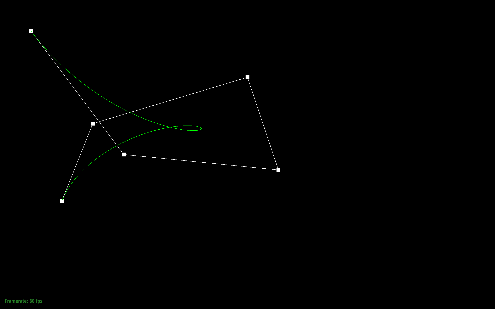
Part 1: Step 0.
|
Part 1: Step 1.
|
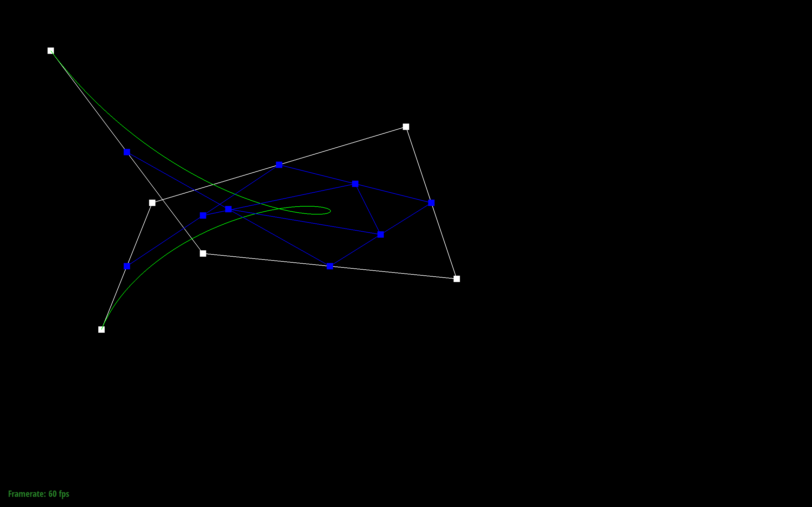
Part 1: Step 2.
|
|
|
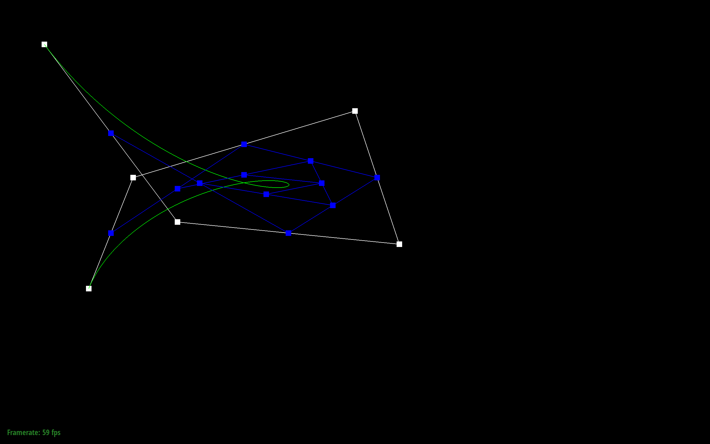
Part 1: Step 3.
|
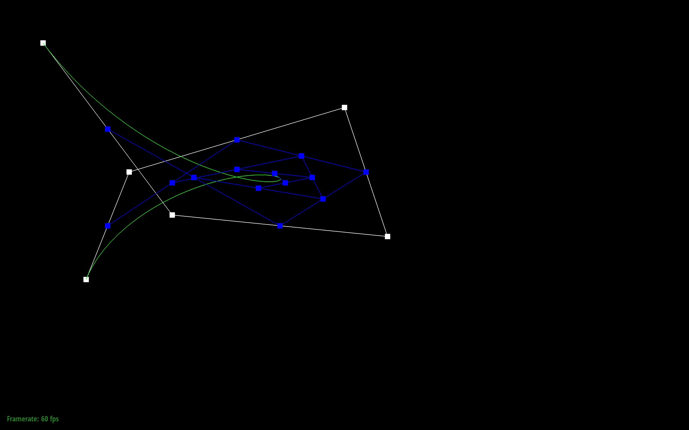
Part 1: Step 4.
|
Part 1: Step 5.
|
De Casteljau’s algorithm is a recursive algorithm which takes in a list of n control points, and for each recursive step output n-1 points by iteratively taking two neighbor control points and applying a lerp function with parameter t on it. This would produce one point eventually. And we then produce a Bezier curve by evaluating multiple points using different t values. For our implementation we coded the recursive steps exactly as defined above, taking in n points and outputting n-1 points.
|
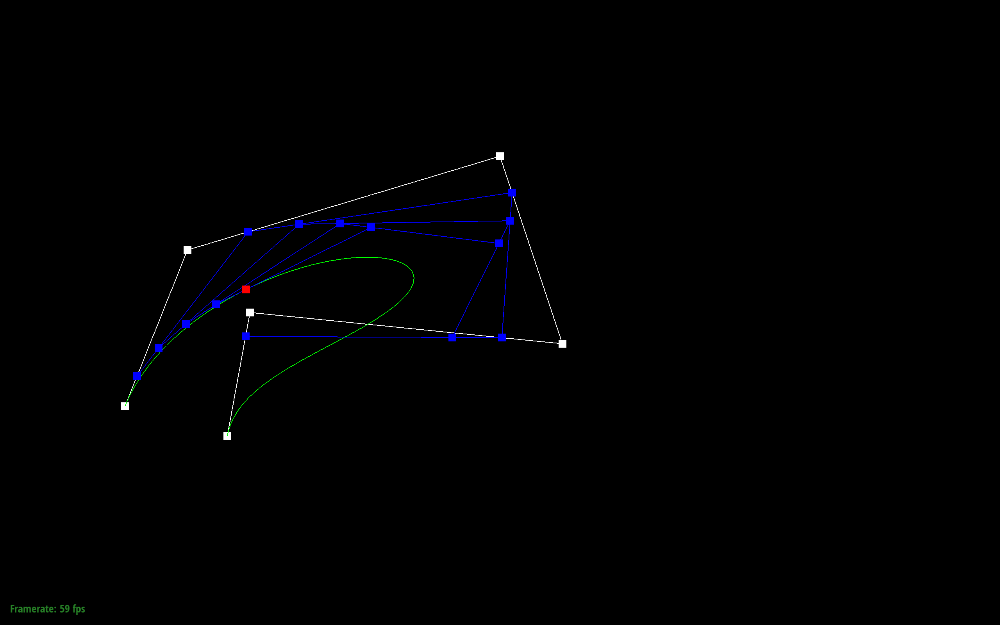
Part 1: Modified control points and t value.
|
Part 2: Bezier Surfaces with Separable 1D de Casteljau
To evaluate a Bezier surface, we take in a matrix of nxn control points. For each row of this matrix, we calculate one point by applying De Castelijaus’s algorithm with parameter u, and this would result in n points. We then treat these n points as control points and apply De Castelijau’s algorithm again with parameter v, evaluating to one final point. We then repeat this process with different u and v values, and finally all the calculated points form a Bezier surface. Our implementation exactly follows the procedure defined above.
|
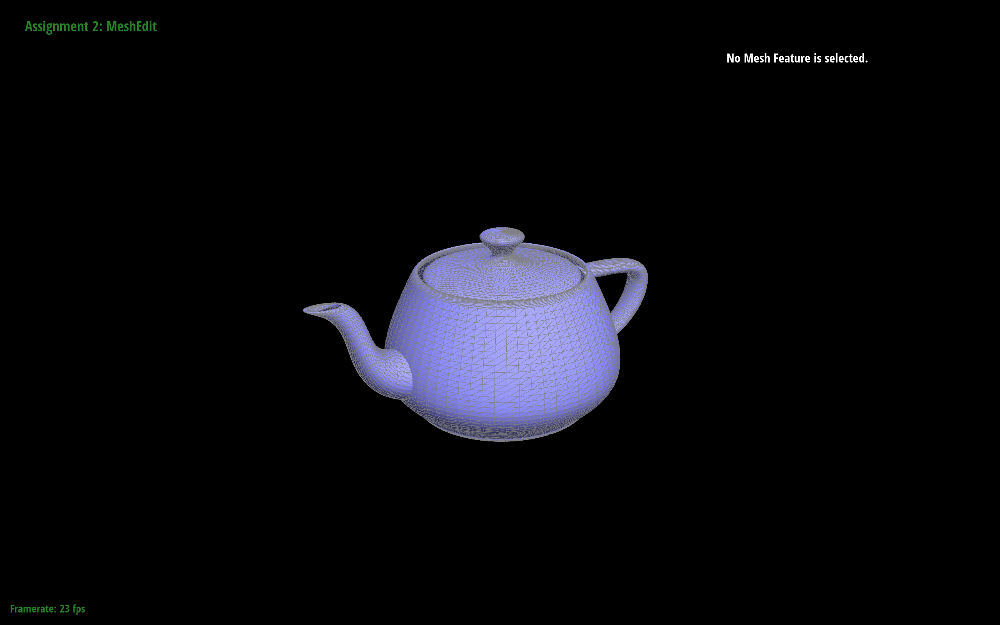
Part 2: teapot rendered with de Casteljau algorithm.
|
Section II: Triangle Meshes and Half-Edge Data Structure
Part 3: Area-Weighted Vertex Normals
Essentially we loop over all triangles adjacent to the given vertex. And for each loop we calculate the weighted normal vector. In detail, for each loop, we follow the initial half edge and its counterclockwise neighbors using next(), obtaining all 3 vertices A, B, C of a triangle from the half edge data structure, and calculate two vectors AB and AC. We then take the cross product of these vectors to obtain the weighted normal vector. We loop by following the initial half edge’s twin half edge to enter the next triangle, and stop our loop when we eventually return to the initial half edge.
|
Part 3: teapot without vertex normals.
|
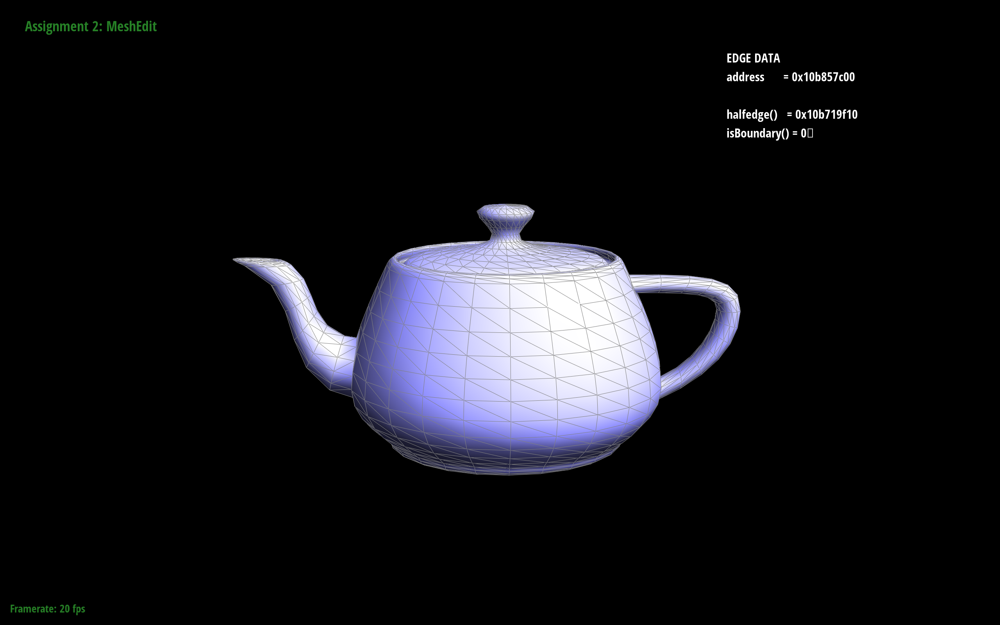
Task 3: teapot with vertex normals.
|
Part 4: Edge Flip
We first reassigned pointers for the face and vertex data structures to ensure they point to the right half edge (edge data structures need not be reassigned as we preserve the original half edge and edge relationship). Then beginning from the initial middle half edge, we reassign the twin, next, vertex and face attributes of it. We loop through the interior 6 half edges, beginning from the 3 on one face and proceeding to the other 3 on the other face. Note that in this process we will lose reference for one of the half edges, and we solved this by using a temporary pointer.
The main bug we experienced is when flipping an edge twice (so it returns to its original position) and then flipping its neighbor edge, a hole would appear in the triangle first flipped. We successfully found the bug by carefully observing the address of the five half edge attributes, and found out two neighboring half edges points to face of different addresses. We then realize when performing an edge flip two edges, one from each face, would swap the face they are included in. We fixed the issue, and as expected, no more holes appeared any more!
|
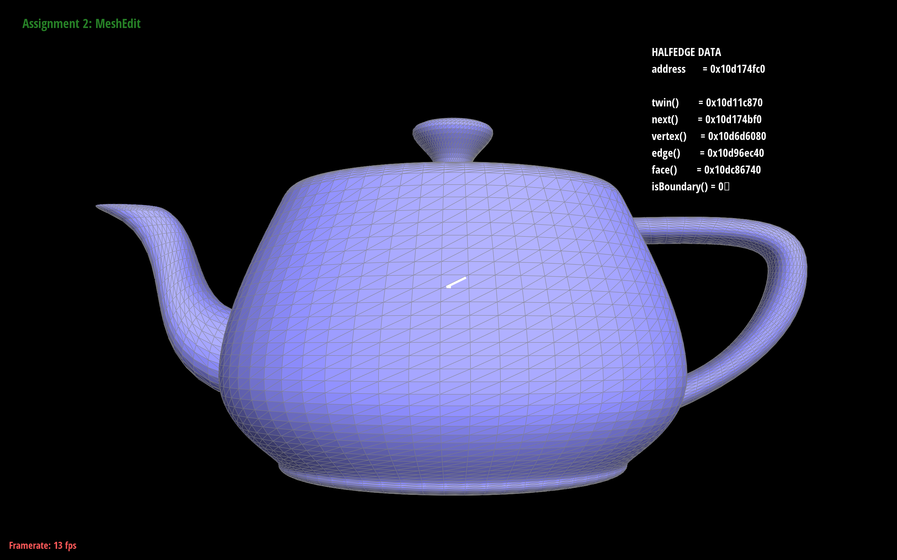
Part 4: Before edge flips.
|
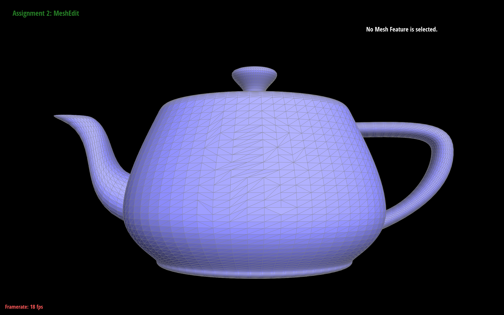
Part 4: After edge flips.
|
Part 5: Edge Split
We begin our edge splitting implementation by first creating the middle vertex by taking the average of the position of the two vertices on the edge.Then we created the new half edges and assigned their corresponding vertex and next attributes. We then created the new faces and edges. After that, we assigned the remaining pointers of the newly created half edges, namely, edge, vertex, and twin. Finally we reassigned pointers for existing faces, edges and half edges. By thoroughly considering all possible attributes of all the mesh elements, there appears to be no bug after our first implementation.
|
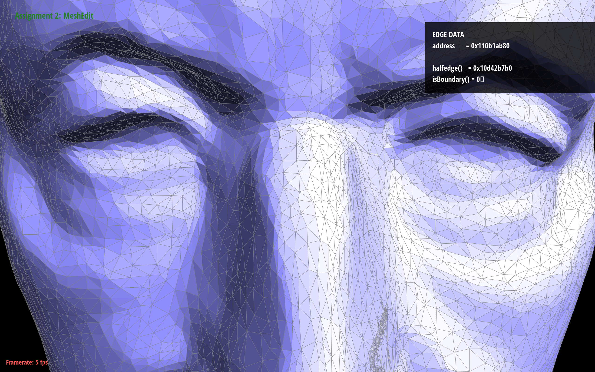
Part 5: Before edge splits.
|
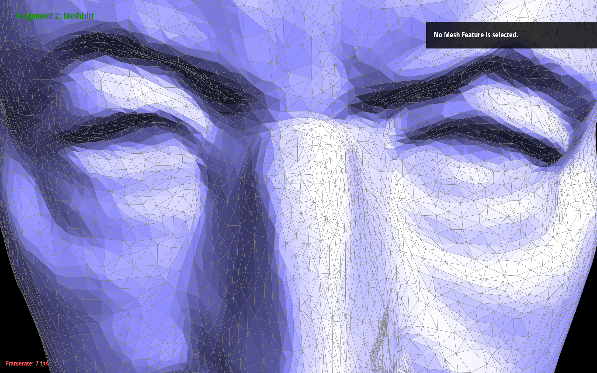
Part 5: After edge splits.
|
|
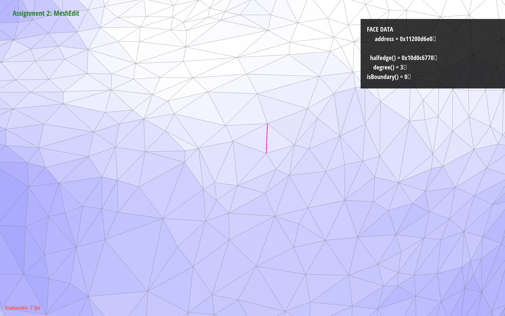
Part 5: Before flips and splits.
|
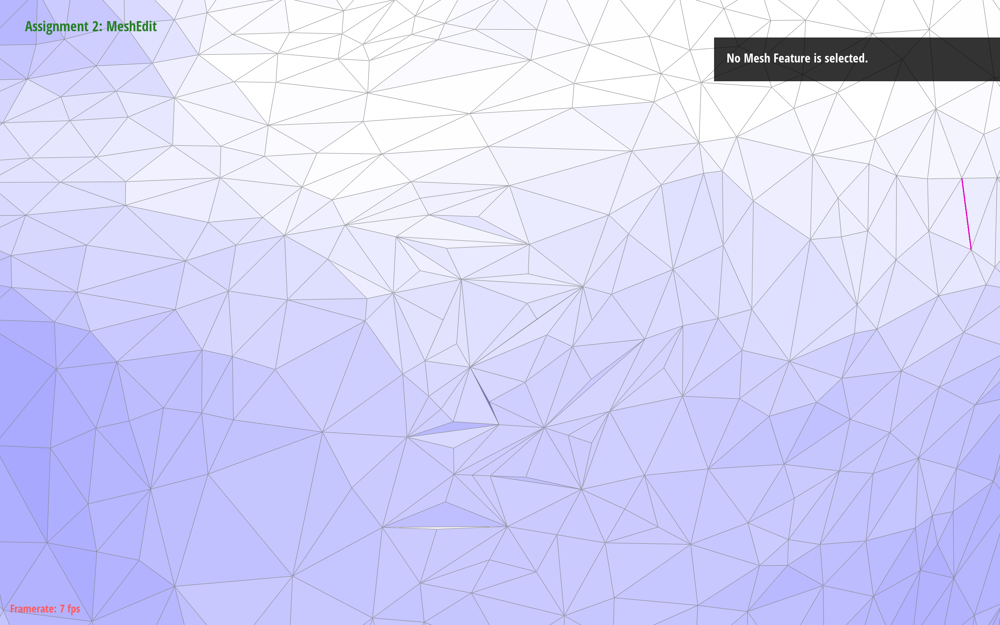
Part 5: After a combination of edge flips and splits.
|
Part 6: Loop Subdivision for Mesh Upsampling
We followed the recommended steps in our implementation. We first iterate through all the vertices and edges. For each vertex, we calculated its updated new position and store it within that vertex. For each edge, we calculated the new midpoint vertex position and stored it within that edge. We then perform edge splitting by looping through all the edges, splitting them, marking new edges and vertices created, until we reach the first edge with isNew flagged true. This works since all the new edges are appended to the edge list. After splitting, we iterate through all the edges, flipping new edges connecting one old vertex and one new vertex. Finally, we reassign the vertex positions, and reassign isNew attribute to false for all mesh elements.
We had several bugs after our first implementation. First, the first level of subdivision works while the other levels do not. And we quickly realize that we did not update the isNew attribute for newly created edges and vertices. Second, there are many sharp edges shooting out of the model, which means our vertex assignment is wrong. We tried to identify the origin of the bug by commenting out different parts of the code: assigning new vertex position, assigning old vertex position, and edge flipping. We located that the bug appears due to edge flipping for assigning new vertex positions. We examine through the edge flipping code and added boolean checks for some pointer reassignments to resolve the issue.
Performance on sharp corners
The sharper corner and edges become rounder and rounder as we perform iterations of loop subdivision. This is expected based on how we reassign the vertex positions. In simple words, the sharp corners are “pulled back” by its surrounding vertices after averaging the sum of them. We can perform edge splitting for edges surrounding these sharp corners, increasing the vertex density, so we will use these nearby vertices to calculate the new positions for the corner vertices instead of those original ones that are far away. The corner vertices will be pulled back much less with this change.
|
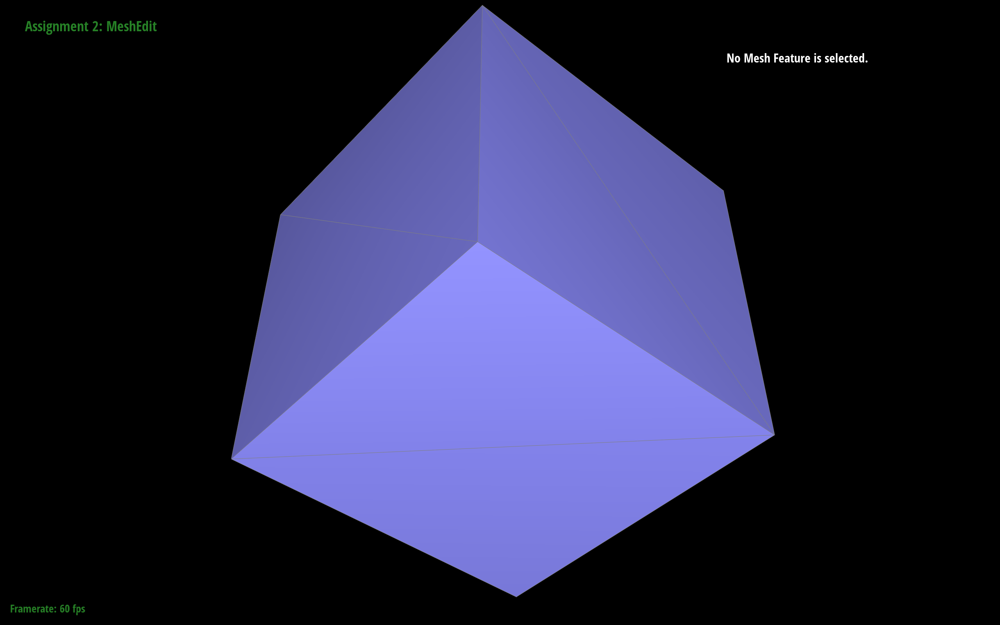
Part 6: Cube before loop subdivision.
|
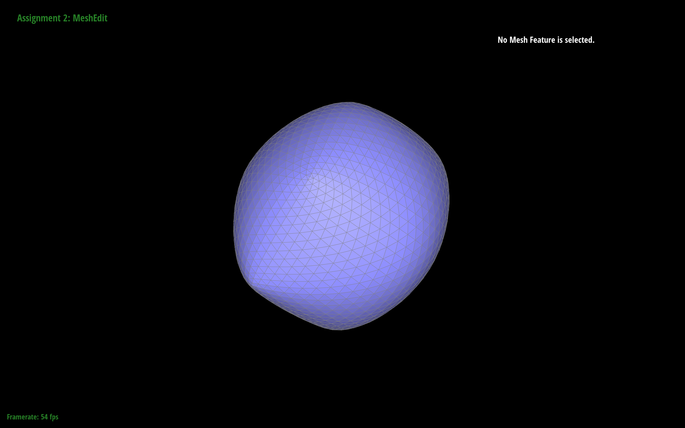
Part 6: Cube after loop subdivision.
|
|
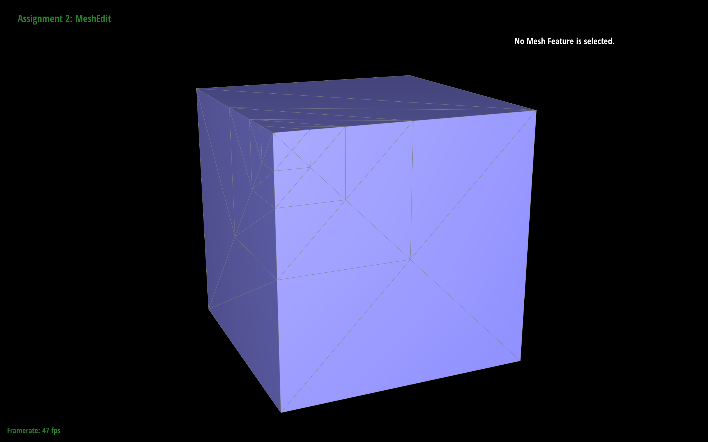
Part 6: Cube with pre-splitted edges.
|
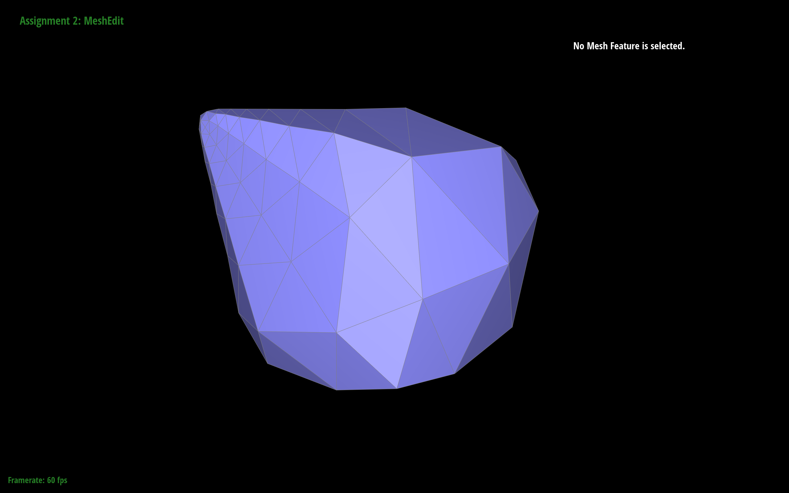
Part 6: Cube with pre-splitted edges after loop subdivision.
|
Assymetry
The cube becomes slightly asymmetric due to the edges connecting to each vertex. Each corner of the cube is connected to different numbers of edges that are not equally distributted in terms of directions, and as a result of position reassignment, the new vertex positions become asymmetric since they are not pulled radially. We can mitigate this effect by connecting new edges to each vertex so that the directions of change are radial and the magnitudes of change are equal. One way of achieving this is through splitting the edge on each face so that each corner vertex is connected to 6 edges symmetrically.
|
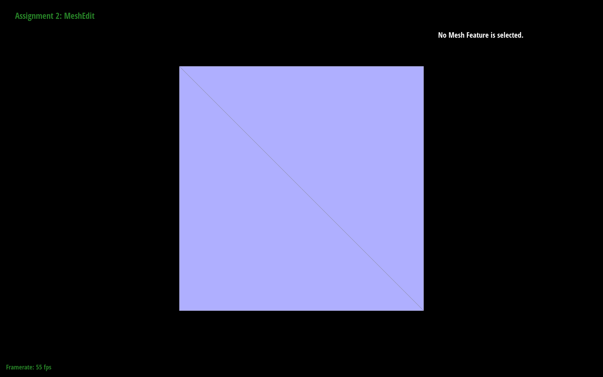
Part 6: Cube loop subdivision step 0.
|
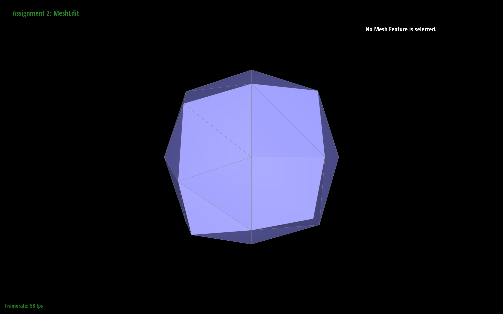
Part 6: Cube loop subdivision step 1.
|
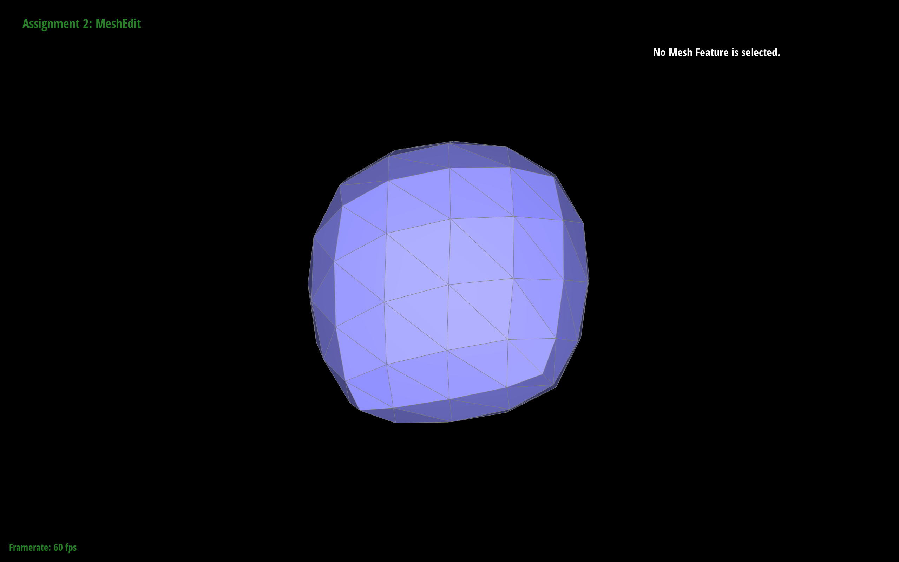
Part 6: Part 6: Cube loop subdivision step 2.
|
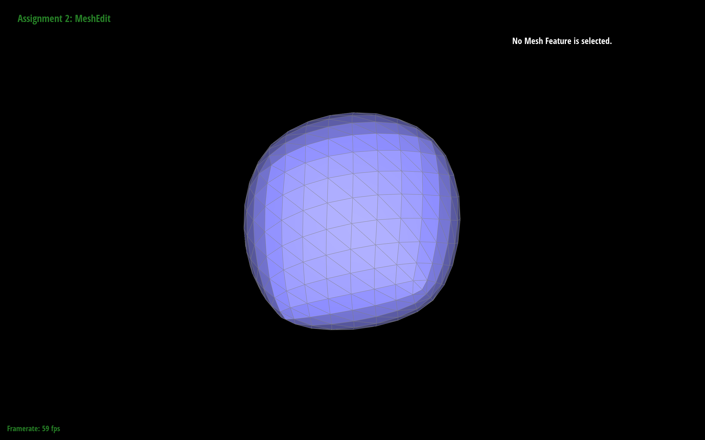
Part 6: Part 6: Cube loop subdivision step 3.
|
Part 6: Part 6: Cube loop subdivision step 4.
|
|
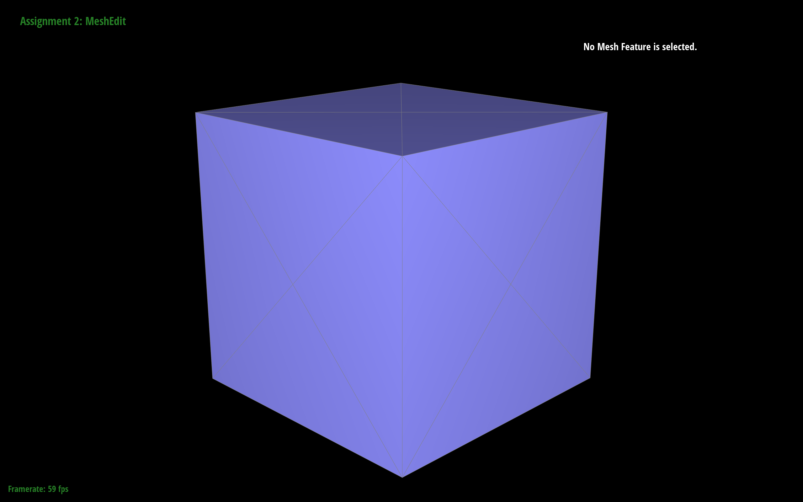
Part 6: Corners with edges in all 6 directions.
|
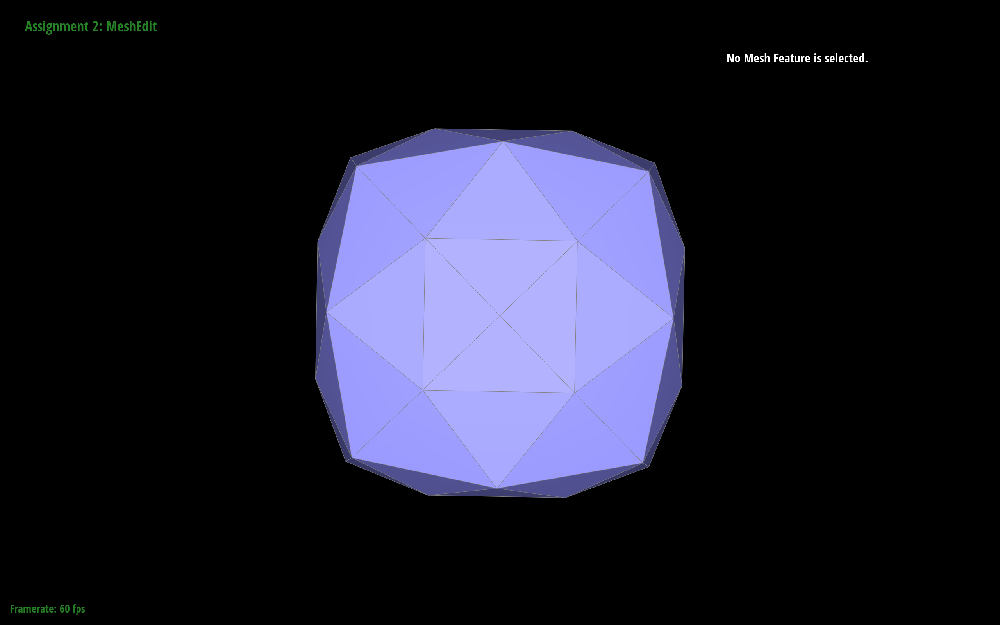
Part 6: Loop subdivision after pre-splitting edges.
|